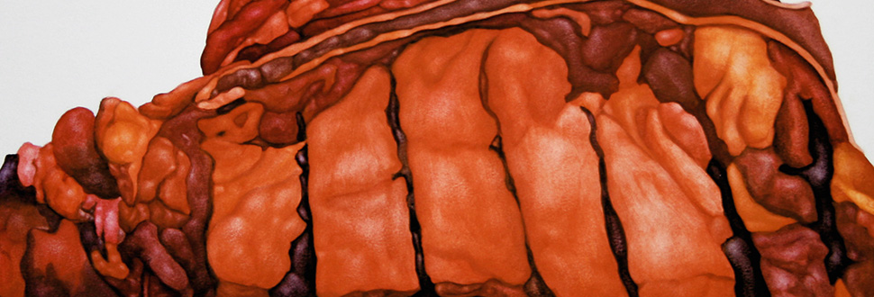
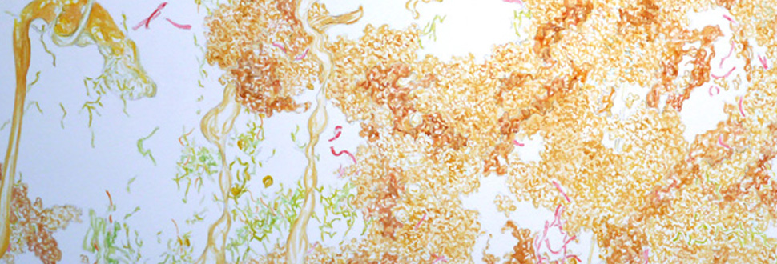
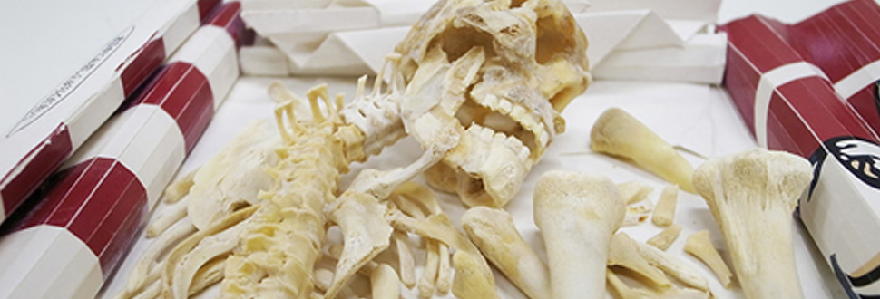
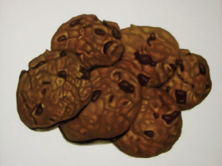
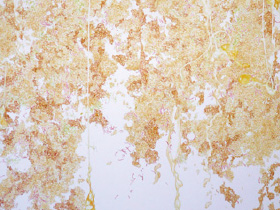

<!DOCTYPE html>
<html lang="ja">
<head>
	<meta charset="utf-8">
	<title>美術食堂〜食べるところから新しい芸術は生まれる〜</title>
	<meta name="viewport" content="width=device-width">
	<meta name="description" content="現代美術家3名による、食をテーマとしたグループ展、美術食堂〜食べるところから新しい芸術は生まれる〜絵画・立体・映像等で構成。">	
	<meta name="keywords" content="食物,美術,食事,現代アート,絵画,ケンタッキーフライドチキン,牛丼,カップヌードル,死刑囚,最後の晩餐">
	<link rel="stylesheet" href="css/base.css">
<!--link rel="stylesheet" href="//maxcdn.bootstrapcdn.com/font-awesome/4.3.0/css/font-awesome.min.css"-->
<link rel="stylesheet" href="css/font-awesome-4.3.0/css/font-awesome.min.css">

	<!--要削除--><meta name="robots" content="noindex">
	<!--要削除--><meta name="robots" ontent="nofollow">

<!--[if lt IE 9]>
<script src="http://html5shiv.googlecode.com/svn/trunk/html5.js"></script>
<style>
body {
	background: url(images/bg.png);
}
nav#mainmenu ul li a {
	background: #b1a687;
	border: 10px solid #f8f7f4;
}
</style>
<![endif]-->
<script type="text/javascript" src="http://ajax.googleapis.com/ajax/libs/jquery/1.9.1/jquery.min.js"></script>
<script type="text/javascript" src="js/openclose.js"></script>
<script type="text/javascript">
$(function(){
	$('a[href^=#]').click(function(){
		var speed = 460;
		var href= $(this).attr("href");
		var target = $(href == "#" || href == "" ? 'html' : href);
		var position = target.offset().top;
		$("html, body").animate({scrollTop:position}, speed, "swing");
		return false;
	});
});
</script>
</head>
<body>
	<div id="container">
		<h1>現代美術家3名による、食をテーマとしたグループ展「美術食堂」。絵画・立体・映像等で構成。</h1>
		<header>
			<h2><a href="index.html"></a>
			</h2>
			<nav id="mainmenu">
				<ul>
					<li><a href="#news">News</a></li>
					<li><a href="#about">About</a></li>
					<li><a href="#member" class="ls">Artists</a></li>
					<li><a href="#access">Access</a></li>
				</ul>
			</nav>
		</header>
		<aside id="mainimg">
			
			
			
			<input type="hidden" id="slide_loop" value="0">
				
				
			</aside>	

			<div id="contents">
				<div id="main">
					<section id="news">
						<h2>News</h2>
						<dl>
							<dt><time datetime="2015-00-00">2015/3/13</time></dt>
							<dd>食をテーマとしたグループ展【美術食堂〜食べるところから新しい芸術は生まれる〜」】の特設サイトを公開いたしました。</dd>	
						</dl>
						
					</section>
					<section>
						<h2 id="about">About</h2>
						<p>会場：<a href="#access">ART SPACE ZERO-ONE</a><br>
						日時：2015/5/31(日)～ （詳細は決定次第本サイトにてお知らせいたします）
						<!--日時：2015/5/31～00/00<br>
						Opening Reception：2015/00/00　00：00-->
						</p>
						<p>
普遍的であると同時に、近年の安全性問題や教育の一環としても、特に関心が高まっている「食」をテーマとした展覧会である。<br>
生きとし生けるものが日々なんらかの形で繰り返している食。それは必ずしも生存するため、食欲を満たすため、食べる快楽を味わうためとは限らないだろう。あるいは真逆の、食べて吐き出すため、過剰に食べて苦しむため、死に至るためという場合さえもあり得る。また、私たち自身が生きるために何ものかの死を必要としていることも避けては通れない。<br>
食とはそのような不条理を含んだ多義的な行為である。<br>
本展は、ありふれた日常に潜む食の問題や、現代における食のあり方を、食をテーマにクリティカルな作品を制作している作家をピックアップして構成するものである。
</p>
						<p class="btn_frame">
							<a class="css_btn_a"><i class="fa fa-files-o"></i>Press release</a>
							<br>※プレスリリース準備中
						</p>
															<p class="pt_sp_only"><a href="#"><i class="fa fa-hand-o-up"></i>PAGE TOP</a></p>
					</section>	
					<section class="list">

						<h2 id="member">Artists</h2>
						<article>
							<figure></figure>
							<div class="atst_name">
								
								<h3><span class="kana">SASAYAMA Naoki</span>
									笹山　直規
									<span class="born">1981 Born in Shiga, Japan.</span></h3>
								</div>
								<p>笹山直規は、テキサスの死刑囚が刑執行の前日に食した『最後の晩餐』を描く。<br>
これはアメリカで絞首刑の公開が行なわれていた時代からある死刑制度である。「生」を最大限に実感する効果的な手段であり、また個人の記憶を司るものである。食べきれないくらいの豪華な料理を要求する者もいれば、コーヒーを一杯だけ、など質素な晩餐もある。中には意味深なメッセージを持たせり、宗教的な儀式のために必要なメニューをリクエストした者もいた。<br>
それら死を受け入れた者達の『肖像画』として表現されたシリーズ作品である。
</p>
								<p class="btn_frame atst_dtl">
									<a class="css_btn_b" href="biography/index.html#atst_01"><i class="fa fa-caret-right"></i></i>biography</a>
								</p>				
							</article>
							<article>
								<figure></figure>
								<div class="atst_name">
									
									<h3><span class="kana">SHINTAKU Tomoni</span>
										新宅　睦仁
										<span class="born">1982 Born in Hiroshima, Japan.</span></h3>
									</div>
									<p>新宅睦仁はファーストフードをモチーフに作品を制作している。牛丼やカップヌードル、コンビニ弁当等の卑近な食べ物を組み替え、単純明快だがシニカルなイメージを作り出す。<br>牛丼やカップヌードルを落下させ、自然界の滝のようにして描くことで、味わうことなく猛然と胃袋に流し込まれる現代人の食の実態を可視化したり、日々廃棄されるコンビニ弁当を山のように積み上げ、そこに日本的な米一粒にも神を見出すアニミズムをからめて、コンビニ弁当の山というご神体とし、崇拝の対象かのように表現したりするのである。
</p>
									<p class="btn_frame atst_dtl">
										<a class="css_btn_b" href="biography/index.html#atst_02"><i class="fa fa-caret-right"></i>biography</a>
									</p>				
								</article>
								<article>
									<figure></figure>
									<div class="atst_name">
										
										<h3><span class="kana">YUGEN Hirofumi</span>
											祐源　紘史
											<span class="born">1979 Born in Okayama, Japan.</span></h3>
										</div>
										<p>説祐源紘史の作品の多くは食べ残した肉の骨や残骸、ファストフードのパッケージなど、食べる行為を経て残ったもので構成されている。また、既視感を与える形態を特徴とし、一見ポップな趣向を凝らしながらも、恐怖や不安といった感情を抱く要素を含んでる。<br>
KFCフライドチキンの骨を洗って人体骨格として再構築した《KFCシリーズ》の姿はあまりに滑稽で、時に恐ろしく、私たち鑑賞者に問いかけてくるようだ。「私を食べて」その言葉の主は鶏なのか、カーネルサンダースなのか、また、大量消費の果てに残った私たち自身の姿なのか。</p>
										<p class="btn_frame atst_dtl">
											<a class="css_btn_b" href="biography/index.html#atst_03"><i class="fa fa-caret-right"></i>biography</a>
										</p>	
									</article>
									<p class="pt_sp_only"><a href="#"><i class="fa fa-hand-o-up"></i>PAGE TOP</a></p>
								</section>
								<!--/member-->
								<section>
									<h2 id="access">Access</h2>

									<div class="map clear">
										<div class="right">
										<div class="ggmap">
										<iframe src="https://www.google.com/maps/embed?pb=!1m14!1m8!1m3!1d3279.6558023248645!2d135.50265919999998!3d34.713860499999996!3m2!1i1024!2i768!4f13.1!3m3!1m2!1s0x6000e69975079d77%3A0x474a1edaddc12ba3!2z44CSNTMxLTAwNzIg5aSn6Ziq5bqc5aSn6Ziq5biC5YyX5Yy66LGK5bSO77yU5LiB55uu77yZ4oiS77yR77yW!5e0!3m2!1sja!2sjp!4v1423614570342" width="600" height="450" frameborder="0" style="border:0"></iframe>
										</div>	
										</div>	
										<p class="left">

<h3><a href="http://kenichi-takasu.com/zero/" target="_blank">ART SPACE ZERO-ONE</a></h3>
〒531-0072 大阪市北区豊崎4丁目9－16白苑ビル31<br>
<a href="https://twitter.com/ZERO__ONE" target="_blank" class="link"><i class="fa fa-twitter-square"></i>twitter</a><br>
<a href="https://www.facebook.com/ARTSPACEZEROONEjapan" target="_blank" class="link"><i class="fa fa-facebook-official"></i>Facebook</a><br>
<i class="fa fa-envelope"></i><a href="mailto:&#115;&#117;&#114;&#102;&#97;&#99;&#101;&#56;&#56;&#64;&#103;&#109;&#97;&#105;&#108;&#46;&#99;&#111;&#109;">&#115;&#117;&#114;&#102;&#97;&#99;&#101;&#56;&#56;&#64;&#103;&#109;&#97;&#105;&#108;&#46;&#99;&#111;&#109;</a>

<span class="zo_about">
ART SPACE ZERO-ONEは美術家の高須健市が運営する不定期開廊のオルタナティブスペースです。
<a href="http://kenichi-takasu.com/zero/top.html" target="_blank">カレンダー</a>をご確認の上、【開廊日(OPEN)】（13時～18時）にお越し下さい。
なお、開廊日以外でも事前（2日前）に予約をしていただく事でギャラリーを開ける事が可能です。（平日は20時以降、土・日・祝日は24時間可）。</span>
</p>
									</div>
								</section>	
							</div>
							<!--/main-->
							<p id="pagetop"><a href="#"><i class="fa fa-hand-o-up"></i>PAGE TOP</a></p>
						</div>
						<!--/contents-->
					</div>
					<!--/container-->
						<footer>
							<small>Copyright&copy; 2015 GRP EX　All Rights Reserved.</small>
						</footer>
					<script type="text/javascript" src="js/slide_simple_pack.js"></script>
					<script type="text/javascript">
// 表示の幅で設定・PCはウィンドウサイズを反映 */
if (OCwindowWidth() < 480) {
	open_close("newinfo_hdr", "newinfo");
}
</script>
</body>
</html>
